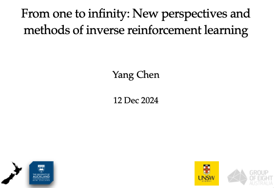

I obtained my PhD in computer science from University of Auckland.
I received the First Class Honours degree in computer science from University of Auckland in 2018. Before coming to New Zealand, I received the B.S. in computer science from Beijing Institute of Technology in 2017.
My research interests span a spectrum of reinforcement learning, multi-agent systems and game theory. Recently, I have aimed to solve issues modelled as multi-agent systems from reinforcement learning and game-theoretic perspectives. Along this line, my ultimate goal is to reinforce the insights into theories of applying reinforcement learning in conjunction with game theory. An important thread of my research is reinforcement learning with many agents, where I attempt to explore exciting methods in such scenarios by combining reinforcement learning and the mean-field theory. Lately, my focus has moved to applying reinforcement learning and large language models in reasoning, behaviour modelling, and, more broadly, ethical AI and responsible AI.
When I am not spending time on research and teaching, I can be found as a hiker and photography lover. The collections of pictures that I took in the hike-way can be found in my personal online gallery and social media. I have hiked to many famous routes in many cities and towns across New Zealand.
I am looking for research interns (LLM and Reinforcement Learning) in Shanghai AI Lab. If you have interest, please contact me via email with your CV attached.
My research interests span a spectrum of reinforcement learning, multi-agent systems and game theory. Recently, I have aimed to solve issues modelled as multi-agent systems from reinforcement learning and game-theoretic perspectives. Along this line, my ultimate goal is to reinforce the insights into theories of applying reinforcement learning in conjunction with game theory. An important thread of my research is reinforcement learning with many agents, where I attempt to explore exciting methods in such scenarios by combining reinforcement learning and the mean-field theory. Lately, my focus has moved to applying reinforcement learning and large language models in reasoning, behaviour modelling, and, more broadly, ethical AI and responsible AI.
When I am not spending time on research and teaching, I can be found as a hiker and photography lover. The collections of pictures that I took in the hike-way can be found in my personal online gallery and social media. I have hiked to many famous routes in many cities and towns across New Zealand.
I am looking for research interns (LLM and Reinforcement Learning) in Shanghai AI Lab. If you have interest, please contact me via email with your CV attached.
Experience
Appointment
| July 2025 -- Present | Young Researcher | Shanghai AI Lab |
| October 2024 -- July 2025 | Senior Research Associate | University of New South Wales |
| June 2021 -- September 2024 | Research Fellow | University of Auckland |
Visiting
| October 2024 | University of Copenhagen |
| June 2022 | University of Electronic Science and Technology of China |
Intern
| September 2020 -- January 2021 | Research Intern | Alibaba DAMO Academy |
Education
| November 2018 -- September 2022 | PhD in Computer Science | University of Auckland |
| July 2017 -- July 2018 | First Class Honours in Computer Science | University of Auckland |
| August 2013 -- June 2017 | BSc in Computer Science and Technology | Beijing Institute of Technology |
Talks
| From One to Infinity: New Perspectives and Methods for Inverse Reinforcement Learning | University of Copenhagen. Denmark. 8 October 2024. |  | Slides |
| Identify and Mitigate Bias-Perpetuating Behaviours: Decoding Animal Behaviour via Many-agent IRL | AAMAS 2024 Affinity Group Event on Diversity in AI. Invited talk. Auckland. 07 May 2024. |  |
Slides |
| Towards Many-agent Inverse Reinforcement Learning via Mean Field Games | DAI 2023. Invited talk. Singapore. 02 Dec 2023. |  |
Slides |
| Promotional talk for AAMAS 2024 at the closing session of AAMAS 2023 | AAMAS 2023. London. 02 Jun 2023. |  |
Slides |
| Mean Field Game as a Framework for Many-agent Inverse Reinforcement Learning | ML and MFG seminar. Online. 06 Dec 2022. | Slides |
Teaching
| COMPSCI 713 Artificial Intelligence Fundamentals | Semester 1, 2024, University of Auckland | Videos/Assignments/Exams/Codes |
| COMPSCI 761 Advanced Topics in Artificial Intelligence | Semester 2, 2022-2023, University of Auckland | Videos/Assignments/Exams/Codes |
Grants
Current Research
-
AI-based behavioural analytics for live sports broadcast
Period: 2024 -- 2026
Role: Associate Investigator
Funding Agency: Ministry of Business, Innovation & Employment (MBIE) Endeavour Fund
Amount Awarded: 1 Million NZD
Awards
| AAMAS 2022 Scholarship | April 2022 |
| Google Global PhD Fellowship Nomination (Austrilia & New Zealand) | August 2020 |
| Best Paper Award, BSCI 2019 | July 2019 |
| Summer scholarship funding from the Precision Driven Health research partnership | July 2019 |
| University of Auckland Doctoral Scholarship | November 2018 - November 2021 |
Academic Services
Conference Reviewer:
| AAAI 2026, COLM 2025, ICML 2025, IJCAI 2025, ACL 2024-2025, ICLR 2025, ECAI 2024-2025, AAMAS 2023-2025. |
Journal Reviewer:
 JMLR. JMLR.
|
Event Organising:
| Local Co-chair of AAMAS 2024 |
| Co-chair of AAMAS 2024 AAAI track |
Publications
In cases that publisher links are non-free, please refer to the PDF files hosted on arXiv or other platforms.
Talks, presentation slides, videos, codes and other extra materials are sometimes included.
Awards are highlighted where available.
Pre-prints
Please see my CV for the latest pre-prints of my recent research work.Reinforcement Learning in Large Language Models
-
The Landscape of Agentic Reinforcement Learning for LLMs: A Survey.
Guibin Zhang, Hejia Geng, Xiaohang Yu, Zhenfei Yin, Zaibin Zhang, Zelin Tan, Heng Zhou, Zhongzhi Li, Xiangyuan Xue, Yijiang Li, Yifan Zhou, Yang Chen, Chen Zhang, Yutao Fan, Zihu Wang, Songtao Huang, Yue Liao, Hongru Wang, Mengyue Yang, Heng Ji, Michael Littman, Jun Wang, Shuicheng Yan, Philip Torr, Lei Bai.
Preprint 2025 | arXiv -
Do We Truly Need So Many Samples? Multi-LLM Repeated Sampling Efficiency Scales Test-Time Compute.
Jianhao Chen, Zishuo Xun, Bocheng Zhou, Qiaosheng Zhang, Yang Chen, Wei Hu, Yuzhong Qu, Wanli Ouyang, Shuyue Hu.
Preprint 2025 | arXiv
Reinforcement Learning, Inverse Reinforcement Learning & Imitation Learning
-
Situational-Constrained Sequential Resources Allocation via Reinforcement Learning.
Libo Zhang, Yang Chen, Toru Takisaka, Kaiqi Zhao, Weidong Li, Jiamou Liu
IJCAI 2025 | arXiv -
Multi-Agent, Human-Agent and Beyond: A Survey on Cooperation in Social Dilemmas.
Hao Guo, Chunjiang Mu, Yang Chen, Chen Shen, Shuyue Hu, Zhen Wang.
Neurocomputing 2024 | arXiv -
Meta-Inverse Reinforcement Learning for Mean Field Games with Probabilistic Context Variables.
Yang Chen, Xiao Lin, Bo Yan, Libo Zhang, Jiamou Liu, Neset Özkan Tan, Michael Witbrock.
Thirty-Eighth AAAI Conference on Artificial Intelligence.
AAAI 2024 | Video/Poster | Code -
Density-based Correlated Equilibrium for Markov Games.
Libo Zhang (equal contribution), Yang Chen (contact, equal contribution), Toru Takisaka, Bakh Khoussainov, Michael Witbrock, Jiamou Liu.
The 22nd International Conference on Autonomous Agents and Multi-agent Systems.
AAMAS 2023 | arXiv | Poster | Code -
Adversarial Inverse Reinforcement Learning for Mean Field Games.
Yang Chen, Libo Zhang, Jiamou Liu, Michael Witbrock.
The 22nd International Conference on Autonomous Agents and Multi-agent Systems.
AAMAS 2023 | arXiv | Poster | Slides -
Interconnected Neural Linear Contextual Bandits with UCB Exploration.
Yang Chen, Miao Xie, Jiamou Liu, Kaiqi Zhao.
The 26th Pacific-Asia Conference on Knowledge Discovery and Data Mining.
PAKDD 2022 -
Individual-Level Inverse Reinforcement Learning for Mean Field Games.
Yang Chen, Libo Zhang, Jiamou Liu, Shuyue Hu.
The 21st International Conference on Autonomous Agents and Multi-agent Systems.
AAMAS 2022 | arXiv -
Social Capital Games as A Framework for Social Structural Pattern Emergence.
Yang Chen, Jiamou Liu.
2020 IEEE/ACM International Conference on Advances in Social Networks Analysis and Mining.
ASONAM 2020 -
Social Structure Emergence: A Multi-agent Reinforcement Learning Framework for Relationship Building.
Yang Chen, Jiamou Liu, He Zhao, Hongyi Su.
The 19th International Conference on Autonomous Agents and Multi-agent Systems.
AAMAS 2020 (Extended Abstract) | Slides | Talk
Multi-agent Behaviour Modelling and Simulation
-
Behaviour Modelling of Social Animals via Causal Structure Discovery and Graph Neural Networks.
Gaël Gendron (co-first), Yang Chen (co-first), Mitchell Rogers, Yiping Liu, Mihailo Azhar, Shahrokh Heidari, David Arturo Soriano Valdez, Kobe Knowles, Padriac O'Leary, Simon Eyre, Michael Witbrock, Gillian Dobbie, Jiamou Liu and Patrice Delmas.
The 23rd International Conference on Autonomous Agents and Multi-agent Systems.
AAMAS 2024 (Extended Abstract) | arXiv -
Meerkat Behaviour Recognition Dataset.
Mitchell Rogers, Gael Gendron, David Soriano Valdez, Mihailo Azhar, Yang Chen, Shahrokh Heidari, Caleb Perelini, Padriac O'leary, Kobe Knowles, Izak Tait, Simon Eyre, Michael Wit- brock, Patrice Delmas.
3rd Workshop on CV4Animals: Computer Vision for Animal Behavior Tracking and Modeling (in conjunction with CVPR 2023).
arXiv | Dataset -
MSDC: Non-intrusive Load Monitoring with a Dual-CNN Model.
Jialing He, Jiamou Liu, Zijian Zhang, Yang Chen, Yiwei Liu, Bakh Khoussainov, Liehuang Zhu.
Thirty-Seventh AAAI Conference on Artificial Intelligence (AAAI-23).
AAAI 2023 | arXiv
Natural Language Processing and Reasoning
-
Assessing and Enhancing the Robustness of Large Language Models with Task Structure Variations for Logical Reasoning.
Qiming Bao, Gaël Gendron, Alex Peng, Wanjun Zhong, Neset Tan, Yang Chen, Michael Witbrock, Jiamou Liu.
The 31st International Conference on Neural Information Processing.
ICONIP 2024 | arXiv -
Abstract Meaning Representation-Based Logic-Driven Data Augmentation for Logical Reasoning.
Qiming Bao, Alex Yuxuan Peng, Zhenyun Deng, Wanjun Zhong, Gaël Gendron, Timothy Pistotti, Neset Tan, Nathan Young, Yang Chen, Yonghua Zhu, Paul Denny, Michael Witbrock, Jiamou Liu.
The 62nd Annual Meeting of the Association for Computational Linguistics.
ACL 2024 Findings | arXiv -
Neuromodulation Gated Transformer.
Kobe Knowles, Joshua Bensemann, Diana Benavides Prado, Vithya Yogarajan, Michael Wit- brock, Gillian Dobbie, Yang Chen.
The Eleventh International Conference on Learning Representations. ICLR 2023 Tiny Papers.
arXiv -
Multi2Claim: Generating Scientific Claims from Multi-Choice Questions for Scientific Fact-Checking.
Neset Tan, Trung Nguyen, Josh Bensemann, Alex Peng, Qiming Bao, Yang Chen, Mark Gahegan, Michael Witbrock.
The 17th Conference of the European Chapter of the Association for Computational Linguistics.
EACL 2023 -
Interpretable AMR-Based Question Decomposition for Multi-hop Question Answering.
Zhenyun Deng, Yonghua Zhu, Yang Chen, Michael Witbrock, Patricia Riddle.
The 31st International Joint Conference on Artificial Intelligence.
IJCAI 2022 -
Prompt-based Conservation Learning for Multi-hop Question Answering.
Zhenyun Deng, Yonghua Zhu, Yang Chen, Qianqian Qi, Michael Witbrock, Patricia Riddle.
The 29th International Conference on Computational Linguistics.
COLING 2022 | arXiv -
Eye Gaze and Self-attention: How Humans and Transformers Attend Words in Sentences.
Joshua Bensemann, Alex Yuxuan Peng, Diana Benavides-Prado, Yang Chen, Nes ̧et Özkan Tan, Paul Michael Corballis, Patricia Riddle, and Michael Witbrock.
Cognitive Modeling and Computational Linguistics (CMCL) 2022. An ACL 2022 Workshop.
PDF -
An explainability analysis of a sentiment prediction task using a transformer-based attention filter.
Neset Özkan Tan, Joshua Bensemann, Diana Benavides-Prado, Yang Chen, Mark Gahegan, Lia Lee, Alex Yuxuan Peng, Patricia Riddle, Michael Witbrock.
The Ninth Annual Conference on Advances in Cognitive Systems
ACS 2021
Graph Theory & Graph Neural Networks
-
A Graph Transformer against Graph Perturbation by Flexible-pass Filter
Yonghua Zhu, Jincheng Huang, Yang Chen, Robert Amor, Michael Witbrock.
Journal of Information Fusion.
Information Fusion -
Robust Node Classification on Graph Data with Graph and Label Noise
Yonghua Zhu, Lei Feng, Zhenyun Deng, Yang Chen, Robert Amor, Michael Witbrock.
Thirty-Eighth AAAI Conference on Artificial Intelligence.
AAAI 2024 -
Efficient Size-Prescribed k-Core Search
Yiping Liu, Bo Yan, Bo Zhao, Hongyi Su, Yang Chen, Michael Witbrock.
The 2023 IEEE/ACM International Conference on Advances in Social Networks Analysis and Mining.
ASONAM 2023 | arXiv -
Chain of Propagation Prompting for Node Classification.
Yonghua Zhu, Zhenyun Deng, Yang Chen, Robert Amor, Michael Witbrock.
ACM MultiMedia 2023.
ACM MM 2023 -
A Reinforcement Learning Approach to Gaining Social Capital with Partial Observation
He Zhao, Hongyi Su, Yang Chen (contact), Jiamou Liu, Hong Zheng, Bo Yan.
The 16th Pacific Rim International Conference on Artificial Intelligence.
PRICAI 2019 -
Dynamic Relationship Building: Exploitation Versus Exploration on a Social Network.
Bo Yan, Yang Chen, Jiamou Liu.
The 18th International Conference on Web Information Systems Engineering.
WISE 2017 | Code -
Can Reinforcement Learning Enhance Social Capital?
He Zhao, Hongyi Su, Yang Chen, Jiamou Liu, Bo Yan, Hong Zheng.
The International Workshop on Web Information Systems in the Era of AI. A WISE 2020 Workshop.
WISE 2020 -
Distributed Community Detection over Blockchain Networks Based on Structural Entropy.
Yang Chen, Jiamou Liu.
The 2019 ACM International Symposium on Blockchain and Secure Critical Infrastructure (BSCI). An AsiaCCS Workshop.
Best Paper Award | BSCI 2019 | PDF -
Becoming Gatekeepers Together with Allies: Collaborative Brokerage over Social Networks.
Yang Chen, Jiamou Liu.
2019 IEEE/ACM International Conference on Advances in Social Networks Analysis and Mining.
ASONAM 2019 | Poster | Code